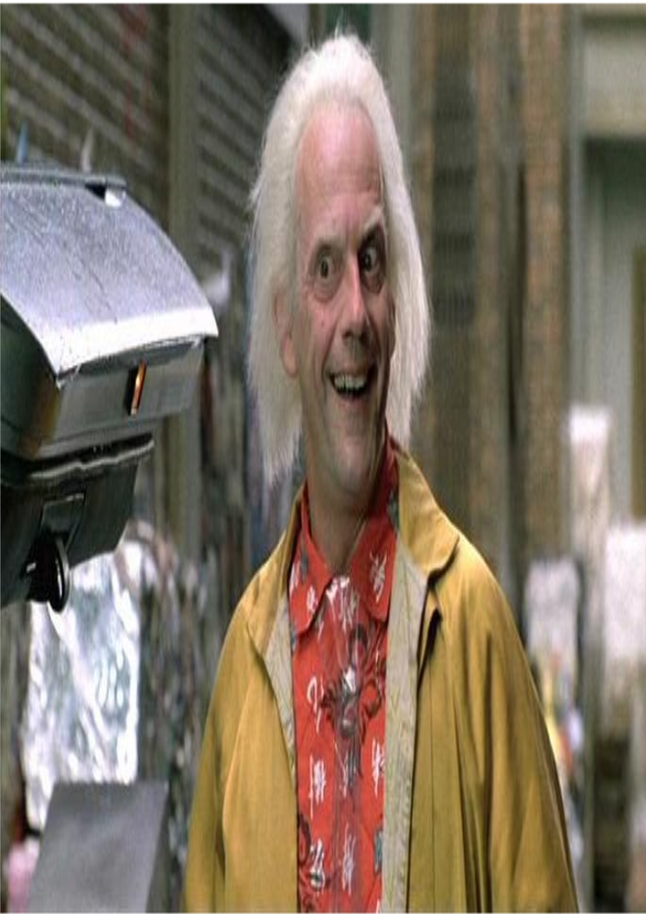
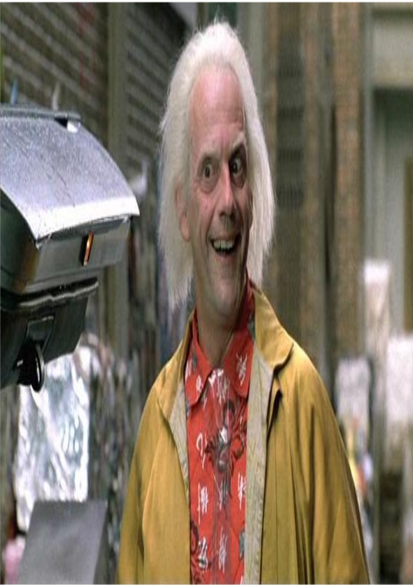
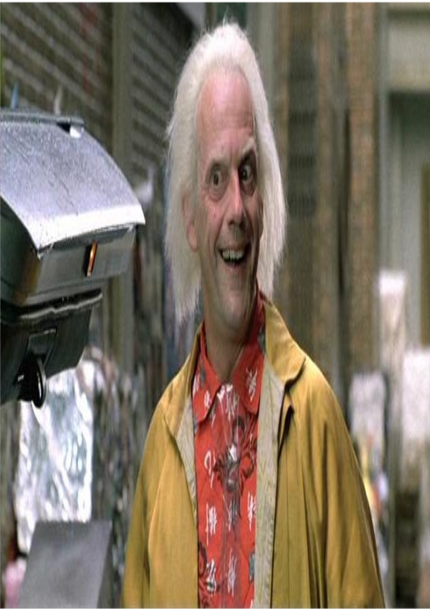

BTTF Memory Hall

 


What really happens in DBZ Xenoverse(in short): Two brand new villains, Towa and Mira, employ the aid of evil Time Breakers to tamper with time itself. (you)and Future Trunks try to fend off their new enemies with the use of Time Patrol warriors. The overall goal is to repair the damage done to the DBZ timeline. These are all of the chapters listed as sagas in DBZ Xenoverse: Prologue, Saiyan, Return of the Saiyans, Ginyu Force, Frieza, Cell, Android, Majin Buu, God of Destruction Beerus, Demon God Démigra, Legendary Super Saiyan.



Leader,Linux Installation (Centos, Gentoo, Ubuntu, Fedora, Redhat, Mint and more)

Wire Shark,Java,SQL (MariaDB),Make a network,568bpunchdown,Raspberry pi,arduino,Make a website,ssh,ftp,ip static,index 3.3,index 1.21,crontab .1,hello.c,hello.java,LowToMin,LowToMinCWC,localhost,dechexbin.py,codecadamy,speed tests,Blender
Coding:html